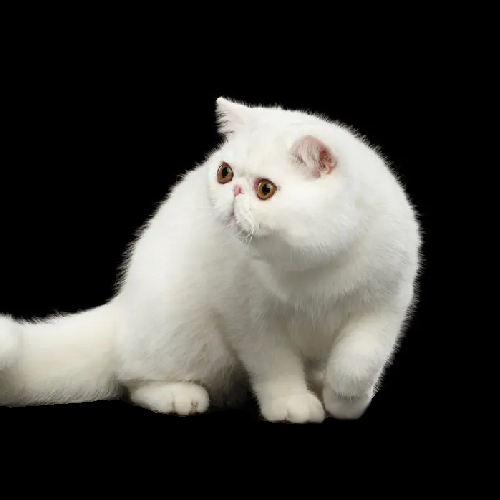
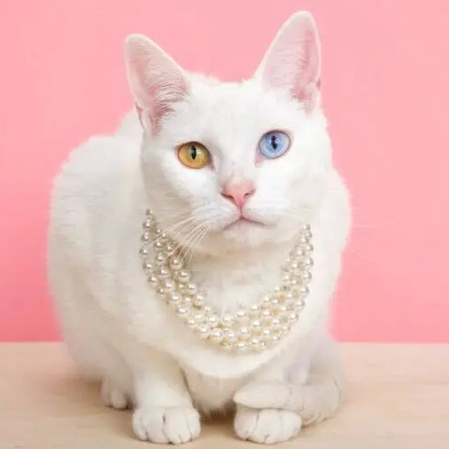
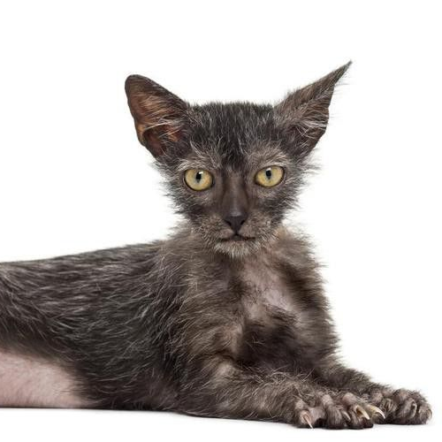
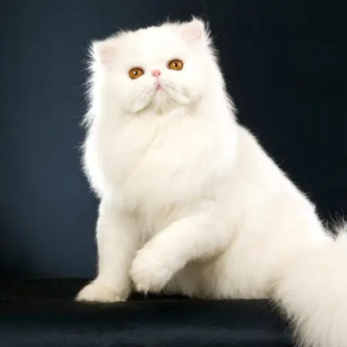
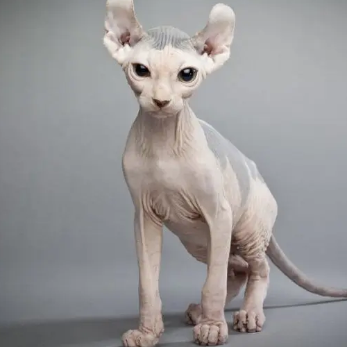
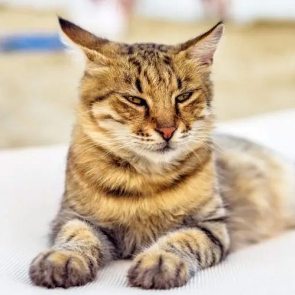

kot egzotyczny
Zalety:
- cichy, spokojny
- bardzo łagodny, bez agresji
- przyjazny, oddany opiekunowi, mocno zżyty
- doskonały kot dla dzieci, jak i dla starszej osoby
- z łatwością akceptuje inne koty oraz psy
Wady:
- mogą wystąpić wrodzone wady genetyczne
- wymaga częstszego przemywania okolic oczu
kot khao manee
Zalety:
- polecany do domów z dziećmi
- nadaje się także dla seniorów
- akceptuje inne koty i psy
- niewymagający w pielęgnacji
Wady:
- może być głośny
- zdarzają się przypadki głuchoty
- rasa bardzo rzadka i droga
kot Lykoi
Zalety:
- brak wrodzonych wad genetycznych
- łatwa pielęgnacja
- zrównoważony charakter
- lubi towarzystwo człowieka
Wady:
- wysoka cena
- bardzo mało hodowli
kot perski
Zalety:
- łagodny i miły w obejściu
- spokojny domator
- lubi zabawy
- łatwo akceptuje inne koty i psy
Wady:
- bardzo wymagający w pielęgnacji
- może mieć wrodzoną wadę nerek (PKD)
- niektóre osobniki mają wady zgryzu
- nie nadaje się na kota wychodzącego
kot elfi
Zalety:
- aktywny, towarzyski, uczuciowy
- lubi zabawy, co nie przemija z wiekiem
- nadaje się do domu z dziećmi
- mniej uczulający, co nie znaczy antyalergiczny
Wady:
- wymaga systematycznej pielęgnacji
- wymaga ochrony przed zimnem i słońcem
- hałaśliwy
- nie nadaje się na kota wychodzącego
kot dragon li
Zalety:
- miły, przyjacielski towarzysz
- łatwo się aklimatyzuje
- dogada się z innym kotem i z psem
- łatwy w pielęgnacji
- ogólnie zdrowy i odporny
Wady:
- rasa bardzo rzadka
- źle znosi samotność